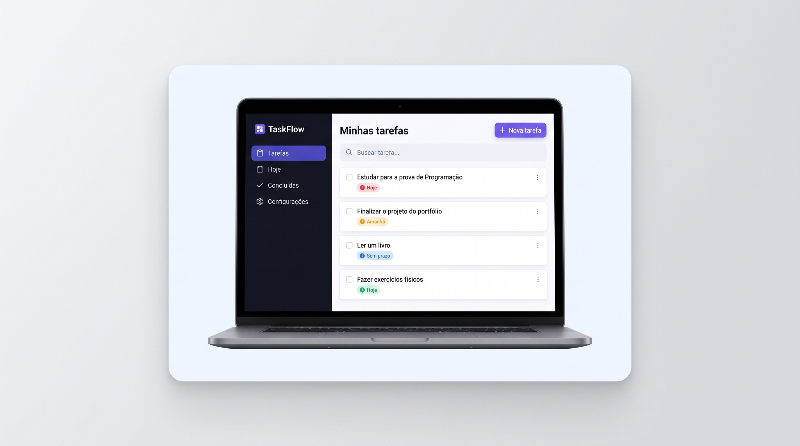
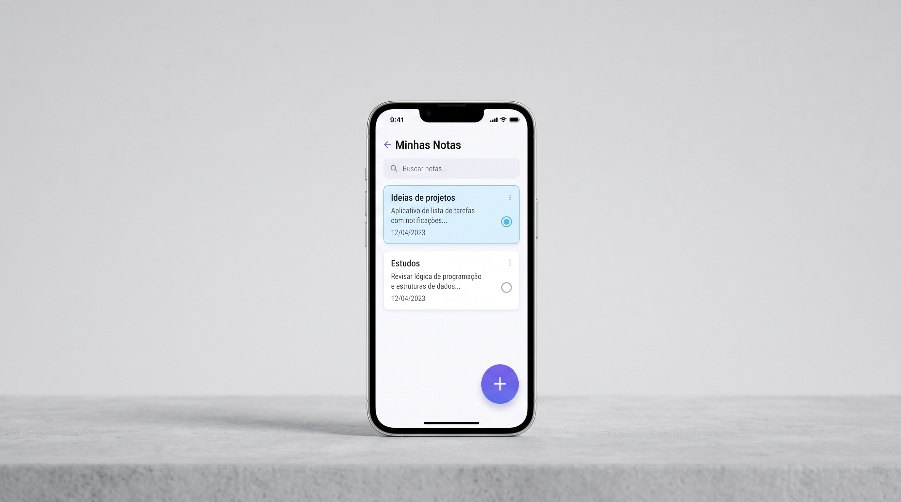
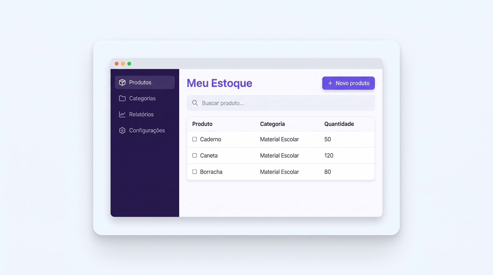

SISTEMA WEB
TaskFlow
Aplicativo de organização de tarefas, com foco em simplicidade e produtividade. Permite criar, editar e acompanhar suas atividades de forma intuitiva.
DESENVOLVEDOR FREELANCER
Ideias que
ganham
vida digital.
Desenvolvo sistemas web, aplicações desktop e aplicativos
mobile para transformar desafios reais em soluções simples,
eficientes e bonitas
SOBRE MIM
Tecnologia com
propósito,
design com significado
Meu nome é João Victor, sou estudante de Ciência da Computação, sou interessado por tecnologia e pelo desenvolvimento de soluções que transformam ideias em projetos reais. Ao longo da minha formação, venho desenvolvendo conhecimentos em programação, desenvolvimento de sistemas e resolução de problemas, buscando sempre aprender novas tecnologias e aprimorar minhas habilidades.
como posso ajudar
Soluções para diferentesDa primeira ideia ao produto final, desenvolvo aplicações sob medida para pessoas e empresas
Plataformas, painéis administrativos, lojas
virtuais e sistemas personalizados que
funcionam diretamente no navegador.
Aplicações para Android e IOS com interfaces
intuitivas,
desempenho e uma experiência
agradável para o usuário.
Sistemas instaláveis para Windows, masOS e
Linux, ideais para
rotinas internas e operações
que precisam funcionar offline.
PORTFÓLIO
Projetos que fazem a diferençaAlguns trabalhos desenvolvidos para transformar processos em experiência

Aplicativo de organização de tarefas, com foco em simplicidade e produtividade. Permite criar, editar e acompanhar suas atividades de forma intuitiva.

Aplicativo simples de anotações, ideal para organizar ideias, estudos e lembretes do dia a dia.

Sistema simples para controle de produtos, pensado para pequenos comércios e uso pessoal.
MEU PROCESSO
Do desafio à soluçãoUm projeto claro e colaborativo para tirar seu projeto do papel
Entendo sua ideia, seus objetivos e as
necessidades do
público.
Defino as funcionalidades, tecnologias
e etapas do projeto.
Transformo o planejamento em uma
aplicação funcional e segura.
Publico a solução acompanho os
próximos passos da evolução.
VAMOS CRIAR JUNTOS?
Tem uma ideia?
Vamos conversar.
Conte um pouco sobre o seu projeto. Será um prazer atender o
desafio e pensar em uma solução para você.